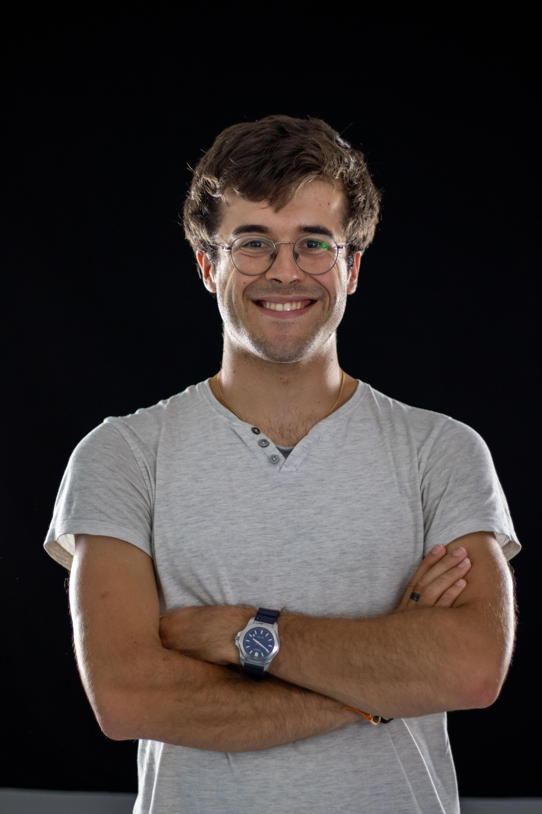

About me
I am a second-year PhD student in cosmology in the CosmoStat team at the Department of Astrophysics of CEA Paris-Saclay, supervised by Martin Kilbinger and Sandrine Codis. My research focuses on galaxy morphology and the intrinsic alignments of galaxies. As part of my thesis, I am a member of the UNIONS and Euclid collaborations.
I obtained my Master's degree in Astronomy and Astrophysics from Paris Observatory in 2024, and then took a professional gap year to carry out a long research internship in cosmology.
Outside of science, I am fond of sports, especially running, and I love music.